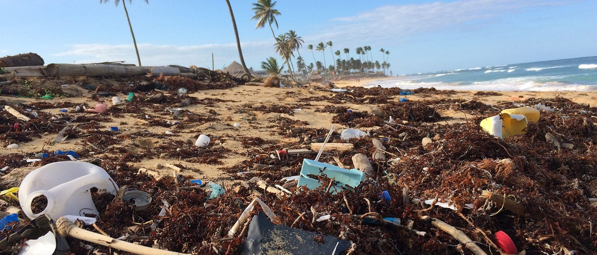
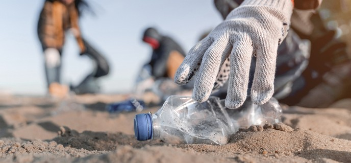
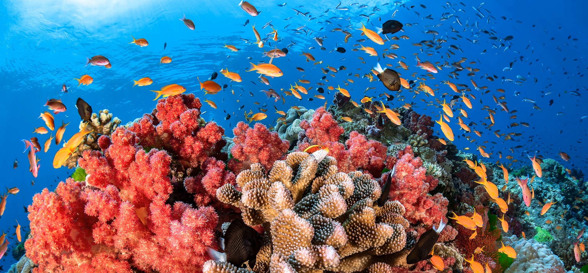
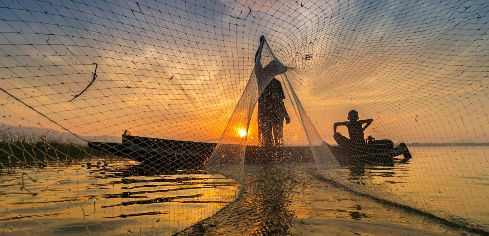
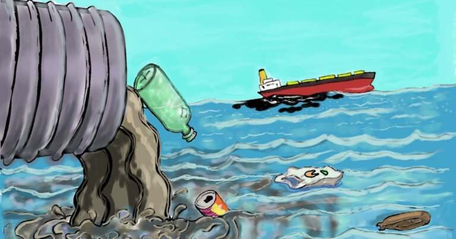
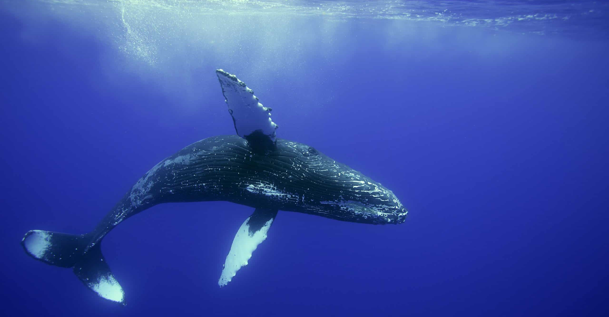

Reduce Plastic Pollution
- Use reusable shopping bags and water bottles.
- Avoid single-use plastics, such as straws and plastic cutlery.
- Separate recyclable waste from general rubbish.
- Never throw rubbish into drains, rivers or the sea.








SDG 14 aims to conserve and sustainably use the oceans, seas and marine resources.
Marine animals may mistake plastic for food, become entangled in plastic waste, or be harmed by the pollution in their habitats.
Coral reefs provide habitats for marine life, support biodiversity, and help protect coastlines.
We can reduce single-use plastics, dispose of waste properly, participate in coastal cleanups, and support marine conservation.